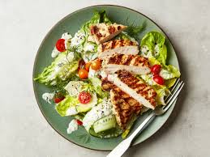

Chicken Salad

Did Somebody say Chicken!!!
This grilled chicken salad is both beautiful in presentation and taste.
You can use fresh berries in summer (strawberries, blueberries, raspberries, or blackberries) and orange segments in winter.
This terrific salad recipe will bring rave reviews any time of the year!.
List of Ingredients
- 1 pound skinless, boneless chicken breast halves
- ½ cup pecans
- ⅓ cup red wine vinegar
- ½ cup white sugar
- 1 cup vegetable oil
- ½ onion, minced
- 1 teaspoon salt
- 1 cup sliced fresh strawberries
- 2 heads Bibb lettuce - rinsed, dried and torn
Steps
- Preheat the grill to high heat. Lightly oil the grill grate.
- Grill chicken until juices run clear, about 8 minutes per side.
Remove from heat, cool, and slice. Set aside.
- Meanwhile, place pecans in a dry skillet over medium-high heat. Cook pecans, stirring frequently, until fragrant, about 8 minutes. Remove from heat and set aside.
- To make the dressing: Combine red wine vinegar, sugar, vegetable oil, onion, mustard, salt, and pepper in a blender. Process until smooth.
- Arrange lettuce on serving plates. Top with grilled chicken slices, strawberries, and pecans. Drizzle with dressing to serve.